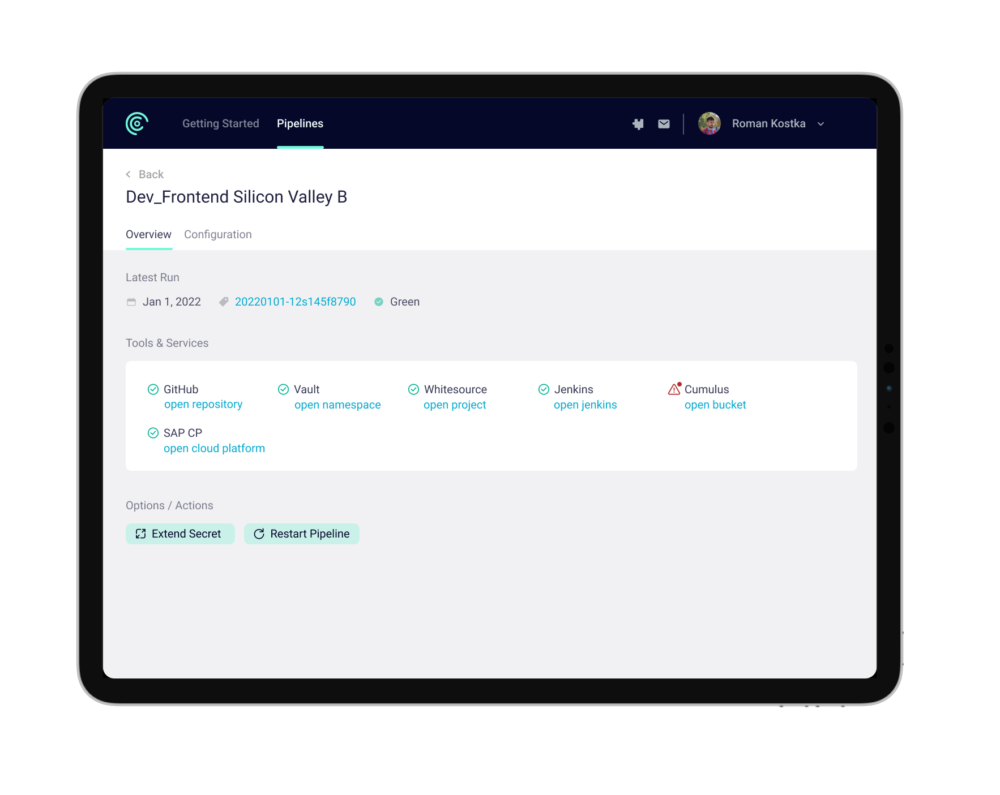

Internal Project
UI & UX Design | User Research
SAP SE
Setting up CI / CD pipelines can be tedious and cumbersome. Especially when it comes to read through the documentation and setting up all needed tools and services. At SAP there is not one combined entry point for developers to get needed information. So setting up a pipeline requires reading through tons of documentations of different tools and setting these up separately. That leads to frustration and developers loose a lot of productivity time.

Using the new self-service tool reduces effort for developers from days to minutes and gives them more time focussing on developing awesome software.
We enable developers to setup and customise their pipeline according to their project setup and needs while still fulfilling all corporate standards within SAP.
The template based approach allows all developers to set up their pipelines based on different criterias like orchestrators, development language & application type.